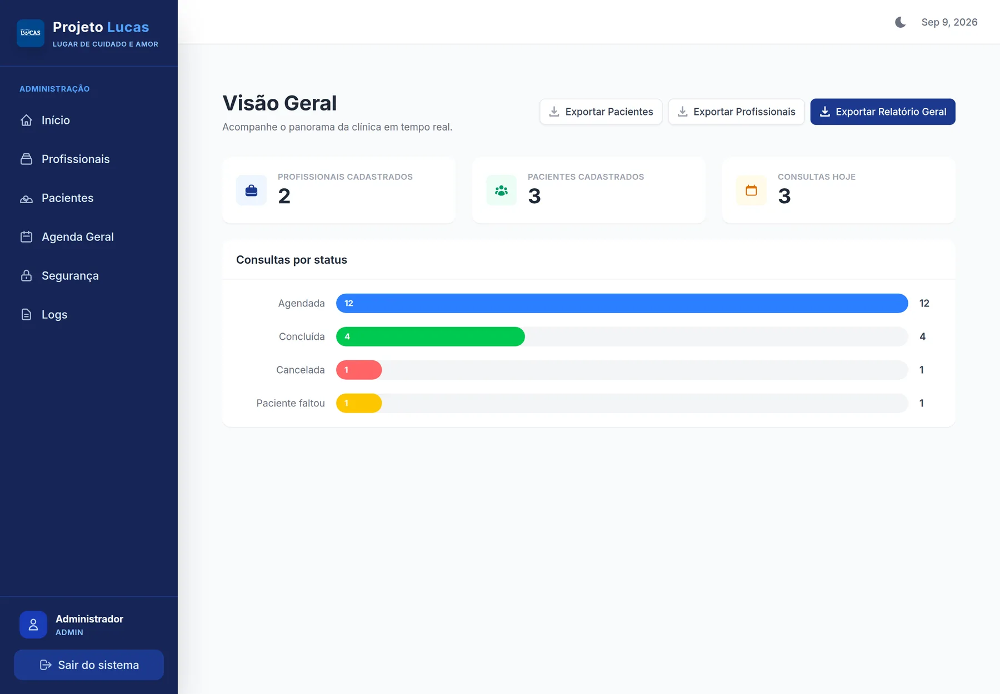
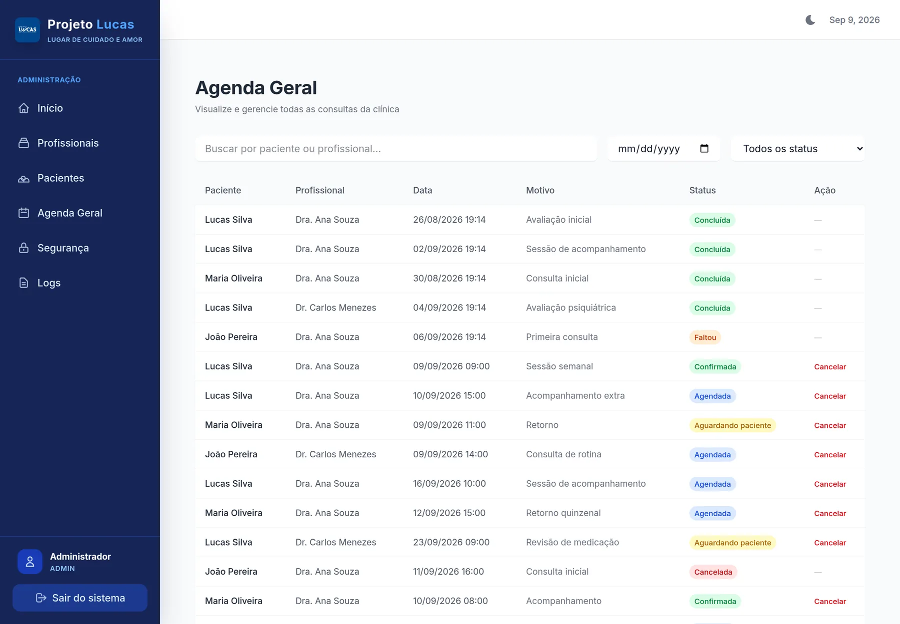
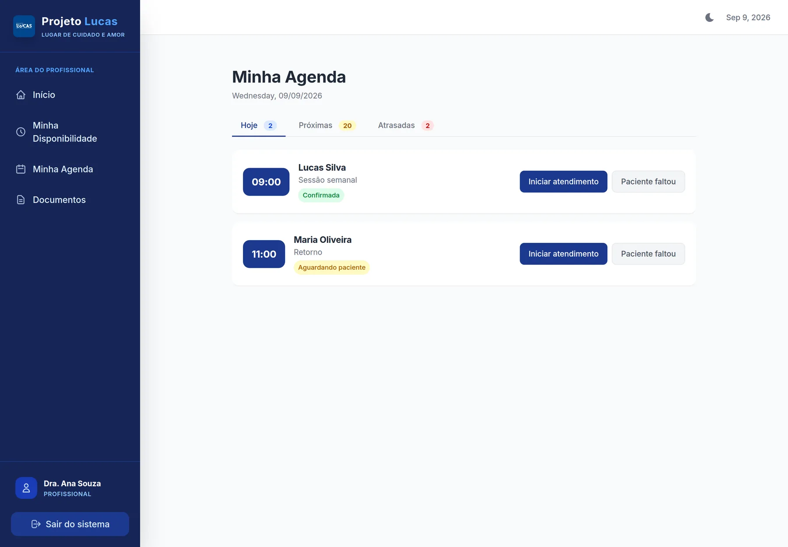
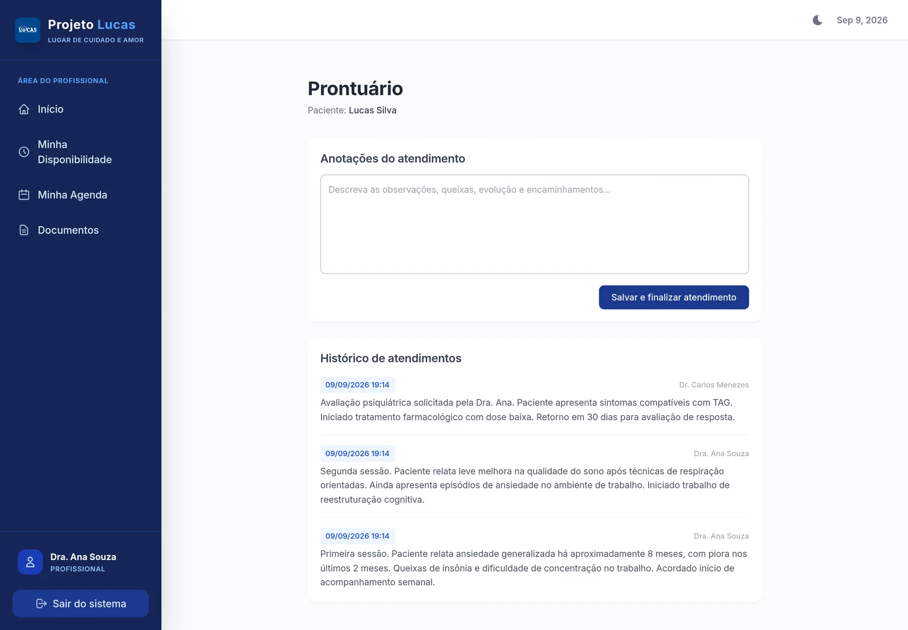
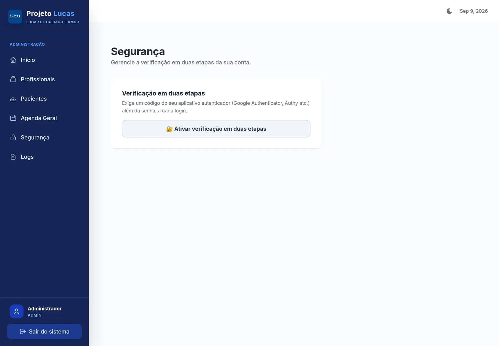

Case · Sistema sob medida
Sistema Lucas: agendamento e prontuário de uma clínica em um sistema só
Plataforma de prontuário eletrônico e agendamento de consultas para uma clínica, com quatro perfis de acesso e conformidade LGPD tratada desde a modelagem — porque aqui o dado é de saúde.

Contexto
Uma clínica com profissionais de saúde atendendo pacientes em agenda recorrente. Três atores diferentes mexem no mesmo recurso o tempo todo: o paciente marca e remarca, o profissional abre e fecha horário, a administração organiza a agenda geral.
O dado em jogo é sensível — identificação, contato, histórico clínico. Isso muda tudo: não basta o sistema funcionar, ele precisa registrar quem acessou o quê, proteger o dado em repouso e respeitar as regras de retenção de prontuário.
O problema
Sem um sistema próprio, a operação clínica esbarrava em pontos que são risco, não só incômodo:
- Agenda combinada por mensagem, sem regra de quem pode marcar, remarcar ou cancelar o quê.
- Prontuário em arquivo, difícil de consultar na hora do atendimento.
- Dado de paciente sem controle de acesso por perfil.
- Nenhuma trilha de quem visualizou ou alterou informação sensível.
- Exclusão de cadastro sem tratar a retenção obrigatória de prontuário.
A solução
Um sistema sob medida com o agendamento como coração — uma máquina de estados que arbitra os três atores — e a conformidade tratada como comportamento transversal, não como remendo. Principais frentes:
- Autenticação & sessão — login com MFA (código de segunda etapa), token curto e refresh rotativo com revogação no logout.
- Disponibilidade — o profissional define seus horários; o sistema deriva os encaixes possíveis.
- Agendamento — marcação, remarcação e cancelamento com regras de transição no sistema, não no combinado.
- Prontuário eletrônico — registro do atendimento; só o profissional conclui a consulta.
- Documentos e exportação — anexos do paciente e exportação de dados sob demanda.
- Segurança & LGPD — auditoria de todo acesso a dado sensível, cifragem por campo, consentimento versionado.
- Lista de espera e NPS — encaixe de vagas liberadas e medição de satisfação pós-consulta.
- Painel de logs — todo WARN/ERROR do sistema visível para a administração, sem depender de acesso ao servidor.
O produto em uso




Resultados
Indicadores de uso (volume de agendamentos, profissionais ativos, redução de retrabalho) estão em levantamento com o cliente e serão publicados após validação.
Engenharia
Depoimento
Publicar apenas com nome, cargo, organização e autorização registrada.
Tem um desafio parecido?
Operação com múltiplos perfis, dado sensível e regras que não podem falhar? Conte o cenário e voltamos em até um dia útil com os próximos passos.
Falar sobre meu projeto